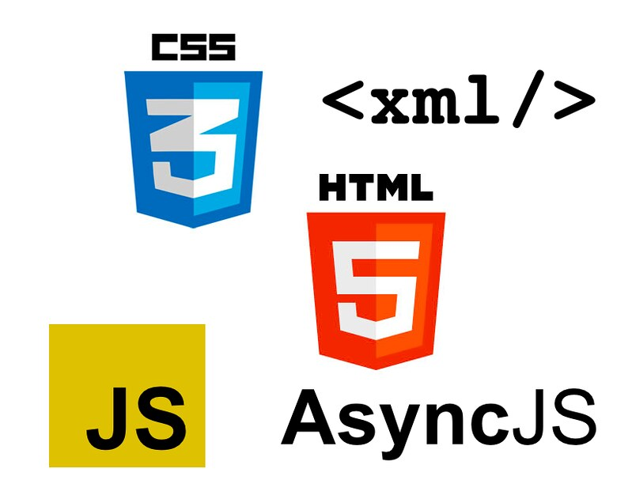

Welcome to CS 472(Spring 2025)
CS 472 introduces methods and tools for creating/maintaining secure and interactive web content. Topics include programming fundamentals to support core web concepts, application development essentials, and content management systems. Web best practices – such as accessibility, design, and critical thinking about relevant ethics and organization. Covers practical skills to design and implement websites using popular scripting languages and frameworks, content management systems (CMSs), and related tools.
Learning Outcomes
By the end of this course, you will be able to:
- Develop understanding and application of popular web scripting languages and development tools and frameworks.
- Install, configure, and customize open source content management systems.
- Understand and apply UX and accessibility best practices in building accessible websites.
- Design solutions to problems using multi-step scripting, logical operations, and functions.
- Understand ethical issues and concerns related to website development and its related technologies.
- Analyze the management challenges, and ethical considerations inherent in web development projects.
“A successful website does three things: It attracts the right kinds of visitors. Guides them to the main services or product you offer. Collect Contact details for future ongoing relation.” -- Mohamed Saad
Possible Future Careers:
- Frontend Developer
- Backend Developer
- Full-stack Developer
- User-Interface Developer
- User-Experience Developer
Getting Started
To get started on enrollment and course details, go to Course Information.